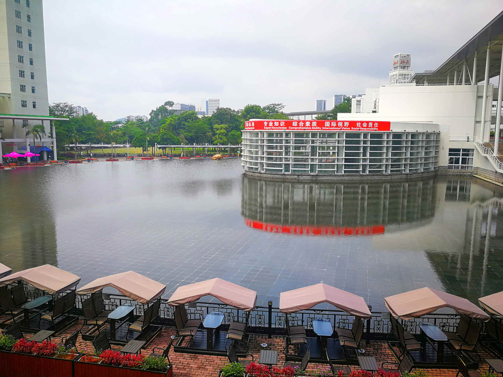

Welcome to Wei Gao's Homepage!
|
Wei GAO (高伟)
|
[Biography] [Research] [Group] [Publications] [Patents] [Projects] [Teaching] [Awards] [Activities] [Visitors]
Recent News
- 2021/02 -- We are organizing a workshop at ICME 2021 (First International Workshop on Quality of Experience in Interactive Multimedia, https://2021.ieeeicme.org/conf_workshops). The submission deadline is March 13, 2021. Welcome to submit papers!
- 2020/07 -- Our group has received the 2020-year CCF-Tencent Rhino-Bird Young Faculty Open Research Fund.
- 2020/07 -- One paper has been accepted to ACM Multimedia 2020 (CCF A Top Conference).
- 2020/07 -- Dr. Wei Gao has been appointed as Associate Editor for Electronics Letters (Internationally renowned peer-reviewed rapid-communication journal).
- 2020/06 -- Dr. Wei Gao has been appointed as Associate Editor for IET Image Processing (CCF recommended journal).
- 2020/05 -- One paper has been accepted to CVPR 2020 Workshops.
Biography
-
Dr. Wei Gao is currently an Assistant Professor (Ph.D. Supervisor) with the School of Electronic and Computer Engineering, Peking University (PKU), Shenzhen, China. He is now leading the Immersive Video Perception (IVP) Group at Peking University (PKU). He received the Ph.D. degree in Computer Science with the Department of Computer Science, City University of Hong Kong (CityU), Kowloon, Hong Kong. He was a Camera ISP Engineer with OmniVision Technologies (OVTI), Shanghai, China. Before that, he obtained the Master degree in Pattern Recognition and Intelligent Systems with the Institute for Pattern Recognition and Artificial Intelligence (National Key Laboratory of Science and Technology on Multi-spectral Information Processing), Huazhong University of Science and Technology (HUST), Wuhan, China. He was a Visiting Graduate Researcher with the Electrical Engineering Department, University of California, Los Angeles (UCLA), CA, USA. He was a Postdoctoral Fellow and Research Associate with the Department of Computer Science, City University of Hong Kong (CityU), Kowloon, Hong Kong, and a Research Fellow with the School of Electrical and Electronic Engineering, Nanyang Technological University (NTU), Singapore, respectively.
Research
-
We are focusing on the research topics of Perception, Compression, Processing and Analysis for Immersive Media (Point Cloud/Light Field/Panorama/3D), and Related Machine Learning & Deep Learning & Optimization Methods (From Theory to Practice).
- Intelligent Image/Video Coding: 2D/3D/Intelligent/Perceptual Image/Video Coding Optimization, Immersive Media and Virtual Reality (Point Cloud/Light Field/Panorama/3D), Multimedia Streaming and Communication
- Image/Video Processing & Computer Vision & Visual Perception: Image/Video Restoration, Salient Object Detection, Visual Perception Models and Quality of Experience (QoE), Segmentation and Classification for 2D/3D/Immersive Visual Media
- Machine Learning & Deep Learning & Optimization Theory & Intelligent Systems: Deep Neural Network Design and Architecture Optimization, Machine Learning and Optimization Methods, Multimedia and AI Accelerators, VLSI Architectures for ASIC/SoC/FPGA Design, HW/SW Co-design
Immersive Video Perception Group
-
Excellent Postdoctoral Fellow, Postgraduate Students (Ph.D. and Master), and Visiting Students (Postdoc/Ph.D./Master/Undergraduate Students from other institutions as Research Associate/Assistant) are welcome to join our team to work on exciting Multimedia Computing and Artificial Intelligence related topics. Please feel free to send your CV and the supporting documents (certificates and transcripts) to the email (gaowei262@pku.edu.cn; gaowei262@126.com). We are also working closely with Peng Cheng Laboratory, Shenzhen, China.
-
Latest News: 2021-year Master (by exam, enrolled date: this September) recruitment: We have only 1 quota, who will be recommended to work on image/video/multimedia restoration problem (computer vision).
Latest News: 2021-year PhD (Engineering, enrolled date: this September) recruitment: We have only 1 quota, who will do his research at his willing (computer vision, video coding, multimedia information processing or others).
Postdoctoral Fellow positions are opening to work on academic research at Peng Cheng Lab (1 quota) or Peking University (2-3 quotas).
PhD and Master positions are opening to work on academic research at Peking University (Regularlly around all the year).
Our current research focuses include video-based point cloud compression (V-PCC), intelligent video coding (deep learning-based image/video compression), intelligent video processing (salient object detection, video restoration), visual perception modeling, deep neural network compression and neural architecture search.
Welcome to contact me at: gaowei262@pku.edu.cn!
-
Current Group Members (I am currently working with the following talented PhD & MPhil students.):
- Hang Yuan (Since 2019.9), Research Direction: perception-inspired intelligent video coding optimization
- Zhanyuan Cai (Since 2019.9), Research Direction: perception-inspired intelligent video coding optimization
- Jianing Chen (Since 2019.9), Research Direction: perception-inspired intelligent video coding optimization
- Lvfang Tao (Since 2019.9), Research Direction: light-weight deep neural network & neural network architecure search
- Fangyu Shen (Since 2019.9), Research Direction: perception-inspired intelligent video coding optimization
- Xiaoyu Zhang (Since 2019.9), Research Direction: deep learning based image/video restoration
- Linjie Zhou (Since 2019.9), Research Direction: deep learning based image/video restoration
- Zixuan Guo (Since 2019.9), Research Direction: deep learning based visual perception modeling
- Songlin Fan (Since 2019.9), Research Direction: deep learning based salient object detection
- Dinghao Yang (Since 2020.9), Research Direction: deep learning based point cloud analysis/objection detection
- Yang Guo (Since 2020.9), Research Direction: light-weight deep neural network & neural network architecure search
- Guibiao Liao (Since 2020.9), Research Direction: deep learning based salient object detection
- Yuyang Wu (Since 2020.9), Research Direction: deep learning based image/video compression
- Wang Liu (Since 2020.9), Research Direction: deep learning based image/video restoration
- Huiming Zheng (Since 2021.9), Research Direction: deep learning based image/video compression
- Zhiyang Qi (Since 2021.9), Research Direction: light-weight deep neural network & neural network architecure search
- Xijing Lu (Since 2021.9), Research Direction: deep learning based salient object detection
- Zetao Yang (Since 2021.9), Research Direction: perception-inspired intelligent video coding optimization
-
Website: Immersive Video Perception (IVP) Group (Note: This website may not be updated in time.)
Publications |
Journal Papers:
- Wei Gao, Sam Kwong, Qiuping Jiang, Chi-Keung Fong, Peter H. W. Wong, and Wilson Y. F. Yuen, "Data-Driven Rate Control for Rate-Distortion Optimization in HEVC Based on Simplified Effective Initial QP Learning," IEEE Transactions on Broadcasting (TBC), vol. 65, no. 1, pp. 94-108, March 2019. [IEEEXplore]
- Wei Gao, Sam Kwong, and Yuheng Jia, "Joint Machine Learning and Game Theory for Rate Control in High Efficiency Video Coding," IEEE Transactions on Image Processing (TIP), vol. 26, no. 12, pp. 6074-6089, December 2017. [IEEEXplore]
- Wei Gao, Sam Kwong, Yu Zhou, and Hui Yuan, "SSIM-Based Game Theory Approach for Rate-Distortion Optimized Intra Frame CTU-Level Bit Allocation," IEEE Transactions on Multimedia (TMM), vol. 18, no. 6, pp. 988-999, June 2016. [IEEEXplore]
- Wei Gao, Sam Kwong, Hui Yuan, and Xu Wang, "DCT Coefficient Distribution Modeling and Quality Dependency Analysis Based Frame-Level Bit Allocation for HEVC," IEEE Transactions on Circuits and Systems for Video Technology (TCSVT), vol. 26, no. 1, pp. 139-153, January 2016. [IEEEXplore]
- Wei Gao, Sam Kwong, and Hongshi Sang, "Low-cost Memory Data Scheduling Method for Reconfigurable FFT Bit-reversal Circuits," Electronics Letters (EL), vol. 51, no. 3, pp. 217-219, Feburary 2015. [IEEEXplore]
- Qiuping Jiang, Wei Gao, Shiqi Wang, Guanghui Yue, Feng Shao, Yo-Sung Ho, Sam Kwong, "Blind Image Quality Measurement by Exploiting High Order Statistics with Deep Dictionary Encoding Network," IEEE Transactions on Instrumentation and Measurement (TIM), vol. 69, no. 10, pp. 7398-7410, April 2020. [IEEEXplore]
- Qiuping Jiang, Feng Shao, Wei Gao, Hong Li, and Yo-Sung Ho, "A Risk-Aware Pairwise Rank Learning Approach for Visual Discomfort Prediction of Stereoscopic 3D Images," IEEE Signal Processing Letters (SPL), vol. 26, no. 11, pp. 1588-1592, November 2019. [IEEEXplore]
- Mingliang Zhou, Xuekai Wei, Shiqi Wang, Sam Kwong, Chi-Keung Fong, Peter H. W. Wong, Wilson Y. F. Yuen, and Wei Gao, "SSIM-Based Global Optimization for CTU-Level Rate Control in HEVC," IEEE Transactions on Multimedia (TMM), vol. 21, no. 8, pp. 1921-1933, August 2019. [IEEEXplore]
- Qiuping Jiang, Feng Shao, Wei Gao, Zhuo Chen, Gangyi Jiang, and Yo-Sung Ho, "Unified No-reference Quality Assessment of Singly and Multiply Distorted Stereoscopic Images," IEEE Transactions on Image Processing (TIP), vol. 28 , no. 4, pp. 1866-1881, April 2019. [IEEEXplore]
- Yuheng Jia, Sam Kwong, Wenhui Wu, Ran Wang, and Wei Gao, "Sparse Bayesian Learning Based Kernel Poisson Regression," IEEE Transactions on Cybernetics (TCYB), vol. 49, no. 1, pp. 56-68, January 2019. [IEEEXplore]
- Wenhui Wu, Sam Kwong, Yu Zhou, Yuheng Jia, and Wei Gao, "Nonnegative Matrix Factorization with Mixed Hypergraph Regularization for Community Detection," Information Sciences (INS), vol. 435, 263-281, April 2018. [ScienceDirect]
- Yu Zhou, Sam Kwong, Wei Gao, and Xu Wang, "A Phase Congruency Based Patch Evaluator for Complexity Reduction in Multi-dictionary Based Single-image Superresolution," Information Sciences (INS), vol. 367-368, pp. 337-353, November 2016. [ScienceDirect]
- Yu Zhou, Sam Kwong, Hainan Guo, Wei Gao, and Xu Wang, "Bi-level Optimization of Block Compressive Sensing with Perceptually Nonlocal Similarity," Information Sciences (INS), vol. 360, pp. 1-20, September 2016. [ScienceDirect]
- Hui Yuan, Sam Kwong, Xu Wang, Wei Gao, and Yun Zhang, "Rate Distortion Optimized Inter View Frame Level Bit Allocation Method for MV-HEVC," IEEE Transactions on Multimedia (TMM), vol. 17, no. 12, pp. 2134-2146, December 2015. [IEEEXplore]
- Guibiao Liao, Wei Gao*, Qiuping Jiang, Ronggang Wang, Ge Li, "MMNet: Multi-Stage and Multi-Scale Fusion Network for RGB-D Salient Object Detection," ACM International Conference on Multimedia (ACM MM), Seattle, WA, USA, pp. 2436–2444, October 2020. [ACM-DL] (Top Conference in Multimedia)
- Zhanyuan Cai, and Wei Gao*, "Efficient Fast Algorithm and Parallel Hardware Architecture for Intra Prediction of AVS3," IEEE International Symposium on Circuits and Systems (ISCAS), Daegu, Korea, May 22-28, 2021. [IEEEXplore]
- Hang Yuan, and Wei Gao*, "A New Coding Unit Partitioning Mode for Screen Content Video Coding," International Conference on Digital Signal Processing (ICDSP), Chengdu, China, February 26-28, 2021. [ACM-DL]
- Wei Gao, Lvfang Tao, Linjie Zhou, Dinghao Yang, Xiaoyu Zhang, Zixuan Guo, "Low-rate Image Compression with Super-Resolution Learning," IEEE/CVF Conference on Computer Vision and Pattern Recognition Workshops (CVPRW), Seattle, WA, USA, pp. 607-610, June 2020. [IEEEXplore]
- Wei Gao*, "On the Performance Evaluation of State-of-the-art Rate Control Algorithms for Practical Video Coding and Transmission Systems," International Conference on Video and Image Processing (ICVIP), Xi’an, China, Dec. 25-27, 2020. [ACM-DL]
- Wei Gao*, "A Multi-Objective Optimization Perspective for Joint Consideration of Video Coding Quality," Asia-Pacific Signal and Information Processing Association Annual Summit and Conference (APSIPA ASC), Lanzhou, China, pp. 986-991, November 2019. [IEEEXplore]
- Wei Gao, and Sam Kwong, "Phase Congruency Based Edge Saliency Detection and Rate Control for Perceptual Image and Video Coding," IEEE International Conference on Systems, Man, and Cybernetics (SMC), Budapest, Hungary, pp. 264-269, October 2016. [IEEEXplore]
- Wei Gao, Sam Kwong, Yu Zhou, Yuheng Jia, Jia Zhang, and Wenhui Wu, "Multiscale Phase Congruency Analysis for Image Edge Visual Saliency Detection," International Conference on Machine Learning and Cybernetics (ICMLC), Jeju, South Korea, pp. 75-80, July 2016. [IEEEXplore]
- Wei Gao, Sam Kwong, Yu Zhou, and Xu Wang, "Phase Congruency Analysis of Down-sampled and Blurring Images for Foreground Extraction," International Conference on Wavelet Analysis and Pattern Recognition (ICWAPR), Guangzhou, China, pp. 152-157, July 2015. [IEEEXplore]
- Yuheng Jia, Sam Kwong, Wenhui Wu, Wei Gao, and Ran Wang, "Generalized Relevance Vector Machine," Intelligent Systems Conference (IntelliSys), London, UK, pp. 638-645, September 2017. [IEEEXplore]
- Yu Zhou, Sam Kwong, Wei Gao, Xiao Zhang, and Xu Wang, "Complexity Reduction in Multi-dictionary Based Single-Image Superresolution Reconstruction via Phase Congruency," International Conference on Wavelet Analysis and Pattern Recognition (ICWAPR), Guangzhou, China, pp. 146-151, July 2015. [IEEEXplore]
- Xu Wang, Sam Kwong, Wei Gao, Yu Zhou, Hui Yuan, and Yun Zhang, "Smooth View Quality Oriented Bit Allocation Optimization for 3D Video Coding," IEEE International Conference on Systems, Man, and Cybernetics (SMC), Hong Kong, pp. 1764-1769, October 2015. [IEEEXplore]
Patents & Standardizations
US Patents:- Wei Gao, and Sam Kwong, “Systems and Methods for Rate Control in Video Coding using Joint Machine Learning and Game Theory,” United States Patent, Application/Filing No. 15/352,222, November 2016. (US10542262B2, Jan. 21, 2020 Granted)
- Wei Gao, Sam Kwong, Chi Keung Fong, Hon Wah Wong, Hon Tung Luk, Hok Kwan Cheung, and Yiu Fai Yuen, “A Method for Initial Quantization Parameter Optimization in Video Coding,” United States Patent, Application/Filing No. 16/016,691, June 2018. (US10560696B2, Feb. 11, 2020 Granted)
- Wei Gao, Zhanyuan Cai, Fangyu Shen and Junle Wang, “Methods, Apparatus, Storage Mediums and Electronic Devices for Video Coding,” China Invention Patent, Application/Filing No. 202110138899.3, February 1, 2021.
- Wei Gao, and Dinghao Yang, “Methods, Apparatus, Devices and Readable Storage Mediums for Point Cloud Data Classification,” China Invention Patent, Application/Filing No. 202011114532.X, October 16, 2020.
- Wei Gao, and Hang Yuan, “Methods, Devices and Storage Mediums for Hardware Friendly Coding Unit Partition in Intra Coding,” China Invention Patent, Application/Filing No. 202010639036.X, July 2, 2020.
- Wei Gao, and Hang Yuan, “Processing Methods and Hardware Apparatus for Intra Coding Blocks,” China Invention Patent, Application/Filing No. 202010628731.6, July 2, 2020.
- Wei Gao, and Zhanyuan Cai, “Methods and Apparatus for Hardware Friendly Regression Tree Based Intra Mode Decision,” China Invention Patent, Application/Filing No. 202010638820.9, July 2, 2020.
- Wei Gao, and Zhanyuan Cai, “Hardware Friendly Fast Determination Methods for Intra Prediction Modes,” China Invention Patent, Application/Filing No. 202010629951.0, July 2, 2020.
- Wei Gao, and Guibiao Liao, “Methods, Apparatus, Devices and Storage Mediums for RGB-D Image Salient Object Detection,” China Invention Patent, Application/Filing No. 202010637797.1, July 2, 2020.
- Wei Gao, and Songlin Fan, “Methods for Light Field Image Saliency Feature Extraction, Information Fusion and Prediction Loss Estimation,” China Invention Patent, Application/Filing No. 202010629954.4, July 2, 2020.
- Wei Gao, Lvfang Tao, and Linjie Zhou, “Methods, Apparatus, Devices and Computer Readable Mediums for View Synthesis,” China Invention Patent, Application/Filing No. 202010623644.1, July 1, 2020.
- Wei Gao, and Xiaoyu Zhang, “Methods, Systems and Computer Readable Mediums for Image Restoration,” China Invention Patent, Application/Filing No. 202010629797.7, July 2, 2020.
- Wei Gao, and Yang Guo, “Methods, Devices and Storage Mediums for Compressive Sensing Based Neural Network Model Compression,” China Invention Patent, Application/Filing No. 202080001140.4, July 1, 2020.
- Wei Gao, Lvfang Tao, Linjie Zhou, Dinghao Yang, Xiaoyu Zhang, and Zixuan Guo, “Methods, Apparatus and Storage Mediums for Super-Resolution Based Image Compression,” China Invention Patent, Application/Filing No. 202010514172.6, June 8, 2020.
- Wei Gao, and Hang Yuan, “Methods, Apparatus, Encoder and Storage Mediums for Coding Unit Partition,” China Invention Patent, Application/Filing No. 202010509585.5, June 4, 2020.
- Wei Gao, and Hang Yuan, “Video Coding Methods, Decoding Methods and Apparatus,” China Invention Patent, Application/Filing No. 201911215452.0, December 2, 2019.
- Wei Gao, Sam Kwong, Chi Keung Fong, Hon Wah Wong, Hon Tung Luk, Hok Kwan Cheung, and Yiu Fai Yuen, “Video Coding Initial Quantization Parameter Optimization Method,” China Invention Patent, CN110636291A, December 31, 2019.
- Wei Gao, and Jianmin Jiang, “Methods, Apparatus, Devices, and Storage Mediums for Video Coding Quality Smoothness Optimization,” China Invention Patent, CN109219960A, Jan. 15, 2019.
- Hongshi Sang, Wei Gao, Yajing Yuan, Chaobing Liang, Jing Zhang, Peng Chen, Dingbing Liao, Kongyang Hu, and Hualong Zhao, “A Memory Data Scheduling Method and Circuit for FFT Data Reordering,” China Invention Patent, CN102306142B, May 2014.
- Hongshi Sang, Chaobing Liang, Wei Gao, Jing Zhang, Yajing Yuan, Wen Wang, Lirong Li, Hui Zhao, and Lianbo Xie, “Sigma Filter Based Non-Uniform Infrared Image Correction Method,” China Invention Patent, CN102968765B, December 2014.
- Hongshi Sang, Chaobing Liang, Wei Gao, Jing Zhang, Yajing Yuan, Wen Wang, Lirong Li, Hui Zhao, and Lianbo Xie, “Joint Linear and Non-linear Filtering Based Non-Uniform Infrared Image Correction Method,” China Invention Patent, CN102968776B, March 2015.
- Hongshi Sang, Dingbing Liao, Yajing Yuan, Peng Chen, Jing Zhang, Chaobing Liang, Hualong Zhao, Kongyang Hu, and Wei Gao, “A 2D Convolver,” China Invention Patent, CN102208005B, March 2014.
- Tianxu Zhang, Hongshi Sang, Miao Hong, Yao Zhao, Dingbing Liao, Wei Gao, Linying Wang, Yajing Yuan, Peng Chen, Jing Zhang, and Kongyang Hu, “Fast Image Rotation ASIC,” China IC Planing Design Rights, BS.115010432, March 2012.
- Tianxu Zhang, Hongshi Sang, Yajing Yuan, Peng Chen, Hualong Zhao, Dingbing Liao, Wei Gao, Jiejun Li, Zhi Zhang, Jing Zhang, and Kongyang Hu, “Non-uniform Infrared Image Correction SOC,” China IC Planing Design Rights, BS.115010459, March 2012.
- Wei Gao, and Yang Guo, “Methods, Devices and Storage Mediums for Compressive Sensing Based Neural Network Model Compression,” PCT International Patent, Application No. PCT/CN2020/099752, July 1, 2020.
- Wei Gao, and Jianmin Jiang, “Methods, Apparatus, Devices, and Storage Mediums for Video Coding Quality Smoothness Optimization,” PCT International Patent, Application No. PCT/CN2018/103661, August 2018. (WO2020042177A1, March 5, 2020 Published)
- Hang Yuan, and Wei Gao*, “Inter Coding Optimization and Fast Algorithm Based on Texture Difference Evaluation,” AVS M5684, the 74th meeting of AVS working group, Online Conference, August 24 to 28, 2020.
- Hang Yuan, and Wei Gao*, “Texture Difference Evaluation Based Fast Algorithm for Inter Coding,” AVS M5314, the 73th meeting of AVS working group, Online Conference, June 8 to 12, 2020.
- Wei Gao, Hang Yuan, and Yabin Zhang “Extended H-shape Coding Unit Partition for Screen Content Video Coding,” AVS M5052, the 71th meeting of AVS working group, Shenzhen China, December 4 to 7, 2019.
Projects
- We are conducting a list of research projects on multimedia computing and AI topics, which are supported by (currently 10+ ongoing projects in total as Principal Investigator (PI)):
- Ministry of Science and Technology of China
- Natural Science Foundation of China
- Guangdong Basic and Applied Basic Research Foundation
- Shenzhen Science and Technology Plan
- CCF-Tencent Open Fund
- Peking University Shenzhen Graduate School
- etc.
- Ministry of Science and Technology of China - Science and Technology Innovation 2030 (New Generation AI Key Project: Fundamental SW/HW Supporting Systems for New Generation AI): Open Community, Testings and Evaluations for New Generation AI (Sub-project PI, 2020.6-2023.5)
- Natural Science Foundation of China (Key Project): High Efficiency Algorithms and Chip Architectures for Ultra-High-Definition Video Coding (Sub-project PI, 2021.1-2025.12)
- Natural Science Foundation of China (Youth Project): Perceptual Coding of Big Video Data Based on Machine Learning and Optimization Modeling (PI, 2019.1-2021.12)
- Guangdong Basic and Applied Basic Research Foundation (General Project): Research on The Optimization Techniques for Ultra-High-Definition Panorama Video Coding (PI, 2019.10-2022.9)
- Shenzhen Science and Technology Plan Basic Research Project (Key Project): Intelligent Learning Based Information Processing and Analysis for Immersive Media (PI, 2021.1-2023.12)
- Shenzhen Science and Technology Plan Basic Research Project (General Project): Research on Visual Experience Oriented Optimization for Panorama Video Coding in Virtual Reality (PI, 2020.1-2022.12)
- Tencent Basic Platform Technology Rhino-Bird Research Fund: Real-time Video System Optimization Based on Joint Analysis for Enhancement and Coding Algorithms (PI, 2020.10-2021.12)
- CCF-Tencent Open Fund (Research Fund & Technology Standardization Research): Quality Assessment and Enhancement for Compressed Game Videos Using Light-Weight Deep Neural Networks (PI, 2020.10-2021.12)
- CCF-Tencent Open Fund (Originality Fund & Technology Standardization Research): Distortion Estimation and Optimization of Screen Content Videos Based on Next Generation Coding Standards (PI, 2019.10-2020.12)
- Hong Kong Research Grants Council (RGC) - General Research Fund (GRF) Project: Learning-based Complexity Control in High Efficiency Video Coding and Beyond (Co-PI, 2017.1-2020.6)
Teaching
- I am teaching the following courses for postgraduate students (PhD & MPhil) at Peking University:
- 3D Vision & Computational Photography (Fall Semester)
- Selected Topics in Advanced Video Processing (Spring Semester)
- 3D Video Technologies (Fall Semester, Completed)
Awards
- CCF-Tencent Rhino-Bird Young Faculty Open Research Fund Recipient (2020)
- Outstanding Paper Award by Guangdong Computer Federation (2019)
- CCF-Tencent Rhino-Bird Young Faculty Open Research Fund Recipient (2019)
- Outstanding Paper Award by Guangdong Computer Federation (2018)
- Overseas High-Caliber Personnel Award (Peacock Talent Plan) by Shenzhen Municipality (2018)
- Research Activity Fund Recipient by City University of Hong Kong (2016)
- Outstanding Academic Performance Award by City University of Hong Kong (2015)
- Conference Grant Recipient by City University of Hong Kong (2015, 2016)
- Research Tuition Scholarship by City University of Hong Kong (2015-2016)
- Outstanding Graduate Award by Huazhong University of Science and Technology (2012)
- Academic Research Achievement Award by Huazhong University of Science and Technology (2011)
- Outstanding Postgraduate Student Award by Huazhong University of Science and Technology (2011)
Activities
Editorships:- Associate Editor for IET Image Processing (Since 2020)
- Associate Editor for Electronics Letters (Since 2020)
- IEEE Membership (M'18), ACM Membership (M'20), IEEE Signal Processing Society (M'20), IEEE Circuits and Systems Society (M'20)
- China CCF Membership (M'18), China CAAI Membership (M'20), China CIE Membership (M'20), China CSIG Membership (M'20)
- Communication Technical Committee Member of CCF Multimedia Technology (M'20)
- Organizer & Co-Chair, International Workshop on Quality of Experience in Interactive Multimedia at IEEE International Conference on Multimedia and Expo (ICME 2021)
- Technical Program Committee, International Conference on Video and Image Processing (ICVIP 2020)
- IEEE Transactions on Circuits and Systems for Video Technology (TCSVT)
- IEEE Transactions on Multimedia (TMM)
- IEEE Transactions on Image Processing (TIP)
- IEEE Transactions on Broadcasting (TBC)
- IEEE Transactions on Cybernetics (TCYB)
- IEEE Transactions on Neural Networks and Learning Systems (TNNLS)
- IEEE Transactions on Industrial Electronics (TIE)
- IEEE Signal Processing Letters (SPL)
- Signal Processing (SIGPRO)
- Neurocomputing (NEUCOM)
- APSIPA Transactions on Signal and Information Processing (SIP)
Gallery
PKU Campus (Shenzhen):